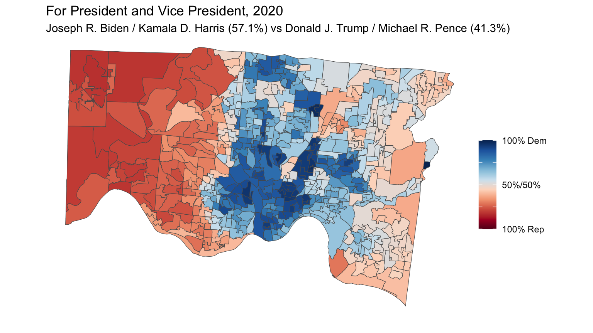

parse_contest_results <-function(xml_file){## Get all Contest nodes contests <- xml_file %>%xml_find_all(".//Contest")# Function to extract vote data for each contest and candidate parse_contest_votes <-function(contest_node) { contest_name <-xml_attr(contest_node, "text")# Get all candidate (Choice) nodes choices <- contest_node %>%xml_find_all(".//Choice")# Iterate through each candidatemap_df(choices, function(choice) { candidate_name <-xml_attr(choice, "text")# Get all VoteType nodes (Early, Election) vote_types <- choice %>%xml_find_all(".//VoteType")# Iterate through each VoteType and precinct datamap_df(vote_types, function(vote_type) { vote_type_name <-xml_attr(vote_type, "name")# Extract precincts precincts <- vote_type %>%xml_find_all(".//Precinct")# For each precinct, extract the votes and precinct namemap_df(precincts, function(precinct) { precinct_name <-xml_attr(precinct, "name") votes <-xml_attr(precinct, "votes") %>%as.numeric()tibble(contest = contest_name,candidate = candidate_name,vote_type = vote_type_name,precinct = precinct_name,votes = votes ) }) }) }) }# Apply the function to all contests election_data <- contests %>%map_df(parse_contest_votes)return(election_data)}
Import election results
Get census population data for interpolating between
Functions
A function to get turnout from the xml file
Code
turnout.df <-function(turnout.data){# Create a data frame turnout.df <-data.frame(name =xml_attr(turnout.data.2020, "name"),totalVoters =as.integer(xml_attr(turnout.data, "totalVoters")),ballotsCast =as.integer(xml_attr(turnout.data, "ballotsCast")),voterTurnout =as.numeric(xml_attr(turnout.data, "voterTurnout")),percentReporting =as.numeric(xml_attr(turnout.data, "percentReporting")),stringsAsFactors =FALSE )return(turnout.df)}
A function to summarize the overall results of a head-to-head race.
Code
results.df <-function(my.race, my.dem, my.rep, election_data) {## Take the total election results and sum up votes for Presidential candidates vote_sums <- election_data %>%filter(contest == my.race) %>%group_by(candidate, vote_type) %>%summarize(total =sum(votes, na.rm =TRUE),.groups="keep") %>%pivot_wider(names_from = vote_type, values_from = total) %>%mutate(Overall =rowSums(across(everything()))) %>%ungroup() column_sums <- vote_sums %>%select(where(is.numeric)) %>%summarize(across(everything(), ~sum(.x, na.rm =TRUE))) vote_sums <- vote_sums %>%add_row(candidate ="Total", !!!column_sums)## Pull out the Democratic and Republican candidates and calculate their percentages dem.row = vote_sums %>%filter(candidate == my.dem) rep.row = vote_sums %>%filter(candidate == my.rep) tot.row = vote_sums %>%filter(candidate =='Total') output =rbind(round(100*dem.row[2:4]/tot.row[2:4],1),round(100*rep.row[2:4]/tot.row[2:4],1))rownames(output) =c(my.dem,my.rep)return(output)}
A function to get head-to-head election results by the precinct
## this interpolation makes no sence for proportions or categorical variables, so remove those resultsinterpolated.results <- interpolated.results %>%select(-c(voterTurnout,percentReporting))assign(paste("interpolated.results_",my.name,sep=""), interpolated.results)
2020 Contests and Candidates
Print out all Contest/Candidates to be able to pull appropriate data
Code
print("-------2020-------")
[1] "-------2020-------"
Code
print(unique(election.data.2020$contest))
[1] "For President and Vice President"
[2] "For Representative to Congress (1st District)"
[3] "For Representative to Congress (2nd District)"
[4] "For State Senator (8th District)"
[5] "For State Representative (27th District)"
[6] "For State Representative (28th District)"
[7] "For State Representative (29th District)"
[8] "For State Representative (30th District)"
[9] "For State Representative (31st District)"
[10] "For State Representative (32th District)"
[11] "For State Representative (33rd District)"
[12] "For County Commissioner (Full term commencing 1-2-2021)"
[13] "For County Commissioner (Full term commencing 1-3-2021)"
[14] "For Prosecuting Attorney"
[15] "For Clerk of the Court of Common Pleas"
[16] "For Sheriff"
[17] "For County Recorder"
[18] "For County Treasurer"
[19] "For County Engineer"
[20] "For Coroner"
[21] "For Justice of the Supreme Court (Full term commencing 1-1-2021)"
[22] "For Justice of the Supreme Court (Full term commencing 1-2-2021)"
[23] "For Judge of the Court of Appeals (1st District)"
[24] "For Judge of the Court of Common Pleas (Full term commencing 1-1-2021)"
[25] "For Judge of the Court of Common Pleas (Full term commencing 1-2-2021)"
[26] "For Judge of the Court of Common Pleas (Full term commencing 1-4-2021)"
[27] "For Judge of the Court of Common Pleas (Full term commencing 2-9-2021)"
[28] "For Judge of the Court of Common Pleas (Full term commencing 2-10-2021)"
[29] "For Judge of the Court of Common Pleas (Full term commencing 2-11-2021)"
[30] "For Judge of the Court of Common Pleas (Full term commencing 2-12-2021)"
[31] "For Judge of the Court of Common Pleas (Full term commencing 2-13-2021)"
[32] "For Judge of the Court of Common Pleas (Drug Court Division) (Full term commencing 1-3-2021)"
[33] "For Judge of the Court of Common Pleas (Probate Division) (Full term commencing 2-9-2021)"
[34] "For Judge of the Court of Common Pleas (Juvenile Division) (Full term commencing 2-14-2021)"
[35] "For Judge of the Court of Common Pleas (Domestic Relations Division) (Full term commencing 7-1-2021)"
[36] "1 PROPOSED TAX LEVY (RENEWAL) CITY OF CHEVIOT - 0.75ml Current Expenses"
[37] "2 PROPOSED TAX LEVY (RENEWAL) CITY OF CHEVIOT - 4.25ml Current Expenses"
[38] "3 PROPOSED TAX LEVY (RENEWAL) CITY OF CHEVIOT - Roads & Bridges"
[39] "4 PARTICULAR PREMISES LOCAL OPTION JUDGMENT ENTRY - KNOWLTON'S TAVERN (LB LLC, INC) CINTI 15-A"
[40] "5 PARTICULAR PREMISES LOCAL OPTION JUDGMENT ENTRY - WARSAW FOOD MART, LLC CINTI 20-B"
[41] "6 PROPOSED CHARTER CITY OF DEER PARK"
[42] "7 PROPOSED TAX LEVY (ADDITIONAL) COLERAIN TOWNSHIP"
[43] "8 PROPOSED TAX LEVY (RENEWAL) VILLAGE OF ELMWOOD PLACE"
[44] "9 PROPOSED TAX LEVY (RENEWAL) VILLAGE OF GLENDALE"
[45] "10 REFERENDUM ON ORDINANCE NO. 2019-10 (BY PETITION) VILLAGE OF GOLF MANOR"
[46] "11 PROPOSED TAX LEVY (RENEWAL) VILLAGE OF GREENHILLS"
[47] "12 PROPOSED TAX LEVY (ADDITIONAL) VILLAGE OF NORTH BEND"
[48] "13 PROPOSED TAX LEVY (ADDITIONAL) SPRINGFIELD TOWNSHIP - Fire"
[49] "14 PROPOSED TAX LEVY (ADDITIONAL) SPRINGFIELD TOWNSHIP - Police"
[50] "15 PROPOSED TAX LEVY (RENEWAL) VILLAGE OF TERRACE PARK"
[51] "16 PROPOSED CHARTER AMENDMENT VILLAGE OF WOODLAWN"
[52] "17 PROPOSED TAX LEVY (RENEWAL) CINCINNATI CITY SCHOOL DISTRICT"
[53] "18 PROPOSED TAX LEVY (SUBSTITUTE) NORWOOD CITY SCHOOL DISTRICT"
[54] "19 PROPOSED TAX LEVY (ADDITIONAL) WINTON WOODS CITY SCHOOL DISTRICT"
Code
print(unique(election.data.2020$candidate))
[1] "Joseph R. Biden / Kamala D. Harris"
[2] "Donald J. Trump / Michael R. Pence"
[3] "Jo Jorgensen / Spike Cohen"
[4] "Howie Hawkins / Angela Walker"
[5] "Brian Carroll / Amar Patel (Write-in)"
[6] "Jade Simmons / Claudeliah J. Roze (Write-in)"
[7] "Tom Hoefling / Andy Prior (Write-in)"
[8] "Kasey Wells / Rachel Wells (Write-in)"
[9] "Dario Hunter / Dawn Neptune Adams (Write-in)"
[10] "President R19 Boddie / Eric Stoneham (Write-in)"
[11] "Kate Schroder"
[12] "Steve Chabot"
[13] "Kevin David Kahn"
[14] "Kiumars Kiani (Write-in)"
[15] "Jaime M. Castle"
[16] "Brad Wenstrup"
[17] "Louis W. Blessing III"
[18] "Daniel Brown"
[19] "Tom Brinkman"
[20] "Sara Bitter"
[21] "Jessica E. Miranda"
[22] "Chris Monzel"
[23] "Cindy Abrams"
[24] "Harrison T. Stanley (Write-in)"
[25] "Bill Seitz"
[26] "Tom Roll"
[27] "Brigid Kelly"
[28] "Catherine D. Ingram"
[29] "Sedrick Denson"
[30] "Mary L. Hill"
[31] "Alicia Reece"
[32] "Andy Black"
[33] "Herman J. Najoli"
[34] "Denise Driehaus"
[35] "Matthew Paul O'Neill"
[36] "Joseph T. Deters"
[37] "Fanon A. Rucker"
[38] "Aftab Pureval"
[39] "Alex Glandorf"
[40] "Charmaine McGuffey"
[41] "Bruce Hoffbauer"
[42] "Scott Crowley"
[43] "Norbert A. Nadel"
[44] "Jill Schiller"
[45] "Charlie Winburn"
[46] "Eric J. Beck"
[47] "Lakshmi Kode Sammarco"
[48] "John P. O'Donnell"
[49] "Sharon L. Kennedy"
[50] "Jennifer Brunner"
[51] "Judi French"
[52] "Ginger Bock"
[53] "Russell J. Mock"
[54] "Melba Marsh"
[55] "Heidi Rosales"
[56] "Christian A. Jenkins"
[57] "Pat Dinkelacker"
[58] "Chris Wagner"
[59] "Curt C. Hartman"
[60] "Jennifer Branch"
[61] "Elizabeth Callan"
[62] "Alan C. Triggs"
[63] "Stacey DeGraffenreid"
[64] "Robert A. Goering"
[65] "Thomas O. Beridon"
[66] "Wende Cross"
[67] "Ethna Marie Cooper"
[68] "Alison Hatheway"
[69] "Charles J. Kubicki, Jr."
[70] "Nicole Sanders"
[71] "Kim Wilson Burke"
[72] "Ralph Winkler"
[73] "Pavan Parikh"
[74] "Kari L. Bloom"
[75] "John M. Williams"
[76] "Amy Searcy"
[77] "Anne B. Flottman"
[78] "FOR THE TAX LEVY"
[79] "AGAINST THE TAX LEVY"
[80] "NO"
[81] "YES"
Biden vs. Trump
Code
my.year ="2020"my.race ="For President and Vice President"my.dem ="Joseph R. Biden / Kamala D. Harris"my.rep ="Donald J. Trump / Michael R. Pence"election_data = election.data.2020my.map = map2020my.name ="Biden.v.Trump.2020"overall.results <-results.df(my.race,my.dem,my.rep,election_data)prec.results <-precinct.results.df(my.race,my.dem,my.rep,election_data)mapANDresults <-left_join(my.map,prec.results,by=c("PRECINCT"="precinct"))interpolated.results <-interpolate_pw(from =st_make_valid(mapANDresults),to =st_make_valid(map),to_id ="PRECINCT",extensive =TRUE,weights =st_make_valid(block.total),weight_column ="total.pop",crs =st_crs(map)) interpolated.results %>%mutate(dem.prop = dem.overall/overall) %>%ggplot(aes(fill=dem.prop)) +geom_sf()+labs(title =paste(my.race,my.year,sep =", "),subtitle =paste(my.dem,' (', overall.results$Overall[1],'%) vs ',my.rep,' (',overall.results$Overall[2],'%)',sep=''),fill ="", caption ="")+scale_fill_gradientn(colours=brewer.pal(n=10,name="RdBu"),na.value ="transparent",breaks=c(0,.25,0.5,.75,1),labels=c("100% Rep","","50%/50%","","100% Dem"),limits=c(0,1))+theme_void()

Code
print(overall.results)
Early Election Overall
Joseph R. Biden / Kamala D. Harris 69.0 40.9 57.1
Donald J. Trump / Michael R. Pence 29.7 57.0 41.3
[1] "For Governor and Lieutenant Governor"
[2] "For Attorney General"
[3] "For Auditor of State"
[4] "For Secretary of State"
[5] "For Treasurer of State"
[6] "For Chief Justice of the Supreme Court (Full term commencing 1-1-2023)"
[7] "For Justice of the Supreme Court (Full term commencing 1-1-2023)"
[8] "For Justice of the Supreme Court (Full term commencing 1-2-2023)"
[9] "For U.S. Senator"
[10] "For Representative to Congress (1st District)"
[11] "For Representative to Congress (8th District)"
[12] "For State Senator (7th District)"
[13] "For State Senator (9th District)"
[14] "For State Representative (24th District)"
[15] "For State Representative (25th District)"
[16] "For State Representative (26th District)"
[17] "For State Representative (27th District)"
[18] "For State Representative (28th District)"
[19] "For State Representative (29th District)"
[20] "For State Representative (30th District)"
[21] "For Judge of the Court of Appeals (1st District)"
[22] "For County Commissioner"
[23] "For County Auditor"
[24] "For Clerk of the Courts of Common Pleas (Unexpired Term ending 1-5-2025)"
[25] "For Member of State Board of Education (4th District)"
[26] "For Judge of the Court of Common Pleas (Full term commencing 1-2-2023)"
[27] "For Judge of the Court of Common Pleas (Full term commencing 1-3-2023)"
[28] "For Judge of the Court of Common Pleas (Full term commencing 1-4-2023)"
[29] "For Judge of the Court of Common Pleas (Full term commencing 1-15-2023)"
[30] "For Judge of the Court of Common Pleas (Juvenile Division) (Full term commencing 1-1-2023)"
[31] "For Judge of the Court of Common Pleas (Dom Rel) (Full term 1-5-2023)"
[32] "For Judge of the Court of Common Pleas (Dom Rel) (Full term 1-16-2023)"
[33] "Issue 1 To require courts to consider factors like public safety when setting the amount of bail"
[34] "Issue 2 To prohibit local government from allowing non-electors to vote"
[35] "3 PROPOSED TAX LEVY (RENEWAL) CINCINNATI CITY SCHOOL DISTRICT"
[36] "4 PROPOSED TAX LEVY (ADDITIONAL) LOVELAND CITY SCHOOL DISTRICT"
[37] "5 PROPOSED BOND ISSUE NORTHWEST LOCAL SCHOOL DISTRICT"
[38] "6 PROPOSED TAX LEVY (ADDITIONAL) WINTON WOODS CITY SCHOOL DISTRICT"
[39] "7 PROPOSED TAX LEVY (ADDITIONAL) LITTLE MIAMI JOINT FIRE AND RESCUE DISTRICT"
[40] "8 PROPOSED TAX LEVY (RENEWAL) HAMILTON CO.: HEALTH & HOSPITALIZATION SERVICES"
[41] "9 PROPOSED TAX LEVY (RENEWAL & INCREASE) HAMILTON CO.: ALCOHOL, DRUG ADD, & MENTAL HEALTH SERVICES"
[42] "10 PROPOSED TAX LEVY (RENEWAL) HAMILTON CO.: SENIOR CITIZEN SERVICES"
[43] "11 PROPOSED CHARTER AMENDMENT: CITY OF CINCINNATI"
[44] "12 PROPOSED CHARTER AMENDMENTS CITY OF DEER PARK"
[45] "13 PROPOSED TAX LEVY (ADDITIONAL) CITY OF MT HEALTHY"
[46] "14 PROPOSED TAX LEVY (RENEWAL) CITY OF NORTH COLLEGE HILL"
[47] "15 LOCAL LIQUOR OPTION FOR SALE OF INTOXICATING LIQUORS ON SUNDAY (BY PETITION) (NORWOOD 1-B)"
[48] "16 PROPOSED (RESOLUTION) GAS AGGREGATION TOWNSHIP OF ANDERSON"
[49] "17 SPECIAL ELECTION BY PETITION LOCAL OPTION ELECTION ON SUNDAY SALE OF LIQUOR (ANDERSON TWP Y)"
[50] "18 PROPOSED TAX LEVY (ADDITIONAL) TOWNSHIP OF GREEN"
[51] "19 PROPOSED TAX LEVY (RENEWAL) TOWNSHIP OF SPRINGFIELD"
[52] "20 PROPOSED TAX LEVY (RENEWAL) VILLAGE OF CLEVES"
[53] "21 PROPOSED TAX LEVY (RENEWAL) VILLAGE OF GLENDALE"
[54] "22 PROPOSED TAX LEVY (ADDITIONAL) VILLAGE OF GLENDALE"
[55] "23 PROPOSED TAX LEVY (RENEWAL) VILLAGE OF GOLF MANOR"
[56] "24 PROPOSED TAX LEVY (RENEWAL) VILLAGE OF GREENHILLS"
[57] "25 PROPOSED TAX LEVY (RENEWAL) VILLAGE OF MARIEMONT"
[58] "26 PROPOSED TAX LEVY (RENEWAL) VILLAGE OF WOODLAWN"
Code
print(unique(election.data.2022$candidate))
[1] "Mike DeWine and Jon Husted"
[2] "Nan Whaley and Cheryl L. Stephens"
[3] "Marshall Usher and Shannon Walker (Write-In)"
[4] "Timothy Grady and Dayna Bickley (Write-In)"
[5] "Renea Turner and Adina Pelletier (Write-In)"
[6] "Craig Patton and Collin Cook (Write-In)"
[7] "Jeffrey A. Crossman"
[8] "Dave Yost"
[9] "Taylor Sappington"
[10] "Keith Faber"
[11] "Chelsea Clark"
[12] "Frank LaRose"
[13] "Terpsehore Tore Maras"
[14] "Scott Schertzer"
[15] "Robert Sprague"
[16] "Jennifer Brunner"
[17] "Sharon L. Kennedy"
[18] "Terri Jamison"
[19] "Pat Fischer"
[20] "Marilyn Zayas"
[21] "Pat DeWine"
[22] "Tim Ryan"
[23] "JD Vance"
[24] "John Cheng (Write-In)"
[25] "Shane Hoffman (Write-In)"
[26] "LaShondra Tinsley (Write-In)"
[27] "Stephen Faris (Write-In)"
[28] "Matthew R. Esh (Write-In)"
[29] "Greg Landsman"
[30] "Steve Chabot"
[31] "Warren Davidson"
[32] "Vanessa Enoch"
[33] "David Dallas"
[34] "Steve Wilson"
[35] "Catherine D. Ingram"
[36] "Orlando B. Sonza, Jr."
[37] "Dani Isaacsohn"
[38] "Adam Paul Teague Koehler"
[39] "Cecil Thomas"
[40] "John Breadon"
[41] "Sedrick Denson"
[42] "Rachel Baker"
[43] "Jenn Giroux"
[44] "Jessica E. Miranda"
[45] "Chris Monzel"
[46] "Cindy Abrams"
[47] "Bill Seitz"
[48] "Alissa Mayhaus"
[49] "Jennifer Kinsley"
[50] "Robert C. Winkler"
[51] "Stephanie Summerow Dumas"
[52] "Matthew O'Neill"
[53] "Christopher E.C. Smitherman"
[54] "Steve E. Grote (Write-In)"
[55] "Brigid Kelly"
[56] "Tom Brinkman"
[57] "Pavan V. Parikh"
[58] "Steven P. Goodin"
[59] "Katie Hofmann"
[60] "Jenny Kilgore"
[61] "Jody Marie Luebbers"
[62] "Christopher McDowell"
[63] "Pat Dinkelacker"
[64] "Thomas O. Beridon"
[65] "Tom Heekin"
[66] "Charles J. Kubicki, Jr."
[67] "Megan E. Shanahan"
[68] "Bernard Mundy"
[69] "Stacey DeGraffenreid"
[70] "Rickell Howard Smith"
[71] "Anne B. Flottman"
[72] "Jon H. Sieve"
[73] "Betsy Sundermann"
[74] "Manisha Kotian"
[75] "YES"
[76] "NO"
[77] "FOR THE TAX LEVY"
[78] "AGAINST THE TAX LEVY"
[79] "AGAINST THE BOND ISSUE"
[80] "FOR THE BOND ISSUE"
[1] "For Governor and Lieutenant Governor"
[2] "For Attorney General"
[3] "For Auditor of State"
[4] "For Secretary of State"
[5] "For Treasurer of State"
[6] "For U.S. Senator"
[7] "For Representative to Congress (1st District)"
[8] "For Representative to Congress (2nd District)"
[9] "For State Senator (7th District)"
[10] "For State Senator (9th District)"
[11] "For State Representative (27th District)"
[12] "For State Representative (28th District)"
[13] "For State Representative (29th District)"
[14] "For State Representative (30th District)"
[15] "For State Representative (31st District)"
[16] "For State Representative (32nd District)"
[17] "For State Representative (33rd District)"
[18] "For County Commissioner (Full term commencing 1-1-2019)"
[19] "For County Auditor"
[20] "For Member of State Board of Education (4th District)"
[21] "For Justice of the Supreme Court (Full term commencing 1-1-2019)"
[22] "For Justice of the Supreme Court (Full term commencing 1-2-2019)"
[23] "For Judge of the Court of Appeals (1st District) (Full term commencing 2-9-2019)"
[24] "For Judge of the Court of Appeals (1st District) (Full term commencing 2-10-2019)"
[25] "For Judge of the Court of Appeals (1st District) (Full term commencing 2-11-2019)"
[26] "For Judge of the Court of Appeals (1st District) (Full term commencing 2-12-2019)"
[27] "For Judge of the Court of Common Pleas (Full term commencing 1-1-2019)"
[28] "For Judge of the Court of Common Pleas (Full term commencing 4-1-2019)"
[29] "For Judge of the Court of Common Pleas (Unexpired term ending 2-10-2021)"
[30] "Issue 1 To Reduce Penalties for Crimes of Obtaining, Possessing, and Using Illegal Drugs"
[31] "2 PROPOSED TAX LEVY (ADDITIONAL) MARIEMONT CITY SCHOOL DISTRICT"
[32] "3 PROPOSED TAX LEVY (SUBSTITUTE) READING COMMUNITY CITY SCHOOL DISTRICT"
[33] "4 PROPOSED TAX LEVY (RENEWAL AND DECREASE) ST. BERNARD-ELMWOOD PLACE CITY SCHOOL DISTRICT"
[34] "5 PROPOSED TAX LEVY (SUBSTITUTE) WINTON WOODS CITY SCHOOL DISTRICT"
[35] "6 PROPOSED TAX LEVY (RENEWAL) GREAT OAKS CAREER CAMPUSES"
[36] "7 PROPOSED TAX LEVY (RENEWAL) COLUMBIA TOWNSHIP WASTE DISPOSAL DISTRICT"
[37] "8 PROPOSED TAX LEVY (RENEWAL) MIAMI TOWNSHIP WASTE DISTRICT"
[38] "9 PROPOSED TAX LEVY (ADDITIONAL) HAMILTON COUNTY CHILDREN'S SERVICES"
[39] "10 PROPOSED CHARTER AMENDMENT - CITY OF CINCINNATI - 2 Year Council Terms"
[40] "11 PROPOSED CHARTER AMENDMENT - CITY OF CINCINNATI - Staggered Council Terms"
[41] "12 PROPOSED CHARTER AMENDMENT - CITY OF CINCINNATI - Executive Session"
[42] "13 PROPOSED CHARTER AMENDMENT - CITY OF CINCINNATI - Campaign Finance"
[43] "14 PROPOSED CHARTER AMENDMENT - CITY OF CINCINNATI - Veterans Preference"
[44] "15 PROPOSED CHARTER AMENDMENT - CITY OF CINCINNATI - Public Safety Academy"
[45] "16 PROPOSED INCOME TAX (INCREASE) CITY OF MADEIRA"
[46] "17 PROPOSED TAX LEVY (RENEWAL) CITY OF NORTH COLLEGE HILL"
[47] "18 PROPOSED ORDINANCE BY PETITION CITY OF NORWOOD - Marijuana Laws and Penalties"
[48] "19 SPECIAL ELECTION BY PETITION LOCAL OPTION - Sunday Sale of Liquor NORWOOD 2-C"
[49] "20 PROPOSED TAX LEVY (RENEWAL) VILLAGE OF GLENDALE"
[50] "21 PROPOSED TAX LEVY (ADDITIONAL) VILLAGE OF GLENDALE"
[51] "22 PROPOSED TAX LEVY (RENEWAL) VILLAGE OF GOLF MANOR"
[52] "23 PROPOSED CHARTER AMENDMENT VILLAGE OF GOLF MANOR"
[53] "24 PROPOSED TAX LEVY (ADDITIONAL) VILLAGE OF GREENHILLS"
[54] "25 PROPOSED CHARTER AMENDMENT VILLAGE OF LINCOLN HEIGHTS - Filing Deadline"
[55] "26 PROPOSED CHARTER AMENDMENT VILLAGE OF LINCOLN HEIGHTS - Qualifications"
[56] "27 PROPOSED TAX LEVY (RENEWAL) VILLAGE OF MARIEMONT - Current Operating Expenses"
[57] "28 PROPOSED TAX LEVY (RENEWAL) VILLAGE OF MARIEMONT - Recreation"
[58] "29 PROPOSED TAX LEVY (RENEWAL) VILLAGE OF TERRACE PARK"
[59] "30 PROPOSED MUNICIPAL INCOME TAX (INCREASE) VILLAGE OF WOODLAWN"
[60] "31 PROPOSED TAX LEVY (ADDITIONAL) DELHI TOWNSHIP"
[61] "32 PROPOSED ZONING PLAN MIAMI TOWNSHIP"
[62] "33 PROPOSED TAX LEVY (ADDITIONAL) SYMMES TOWNSHIP"
Code
print(unique(election.data.2018$candidate))
[1] "Richard Cordray and Betty Sutton"
[2] "Mike DeWine and Jon Husted"
[3] "Travis M. Irvine and J. Todd Grayson"
[4] "Constance Gadell-Newton and Brett R. Joseph"
[5] "Renea Turner and Keith Colton"
[6] "Rebecca Ayres and Anthony Durgans"
[7] "Richard Duncan and Dennis A. Artino"
[8] "Steve Dettelbach"
[9] "Dave Yost"
[10] "Zack Space"
[11] "Keith Faber"
[12] "Robert C. Coogan"
[13] "Kathleen Clyde"
[14] "Frank LaRose"
[15] "Dustin R. Nanna"
[16] "Michael W. Bradley"
[17] "Rob Richardson"
[18] "Robert Sprague"
[19] "Sherrod Brown"
[20] "Jim Renacci"
[21] "Stephen Faris"
[22] "Aftab Pureval"
[23] "Steve Chabot"
[24] "Dirk Kubala"
[25] "Kiumars Kiani"
[26] "Jill Schiller"
[27] "Brad Wenstrup"
[28] "James J. Condit, Jr."
[29] "David Baker"
[30] "Steve Wilson"
[31] "Sara Bitter"
[32] "Cecil Thomas"
[33] "Tom Chandler"
[34] "Tom Brinkman"
[35] "Christine Fisher"
[36] "Jessica E. Miranda"
[37] "Jonathan Dever"
[38] "Regina A. Collins"
[39] "Louis W. Blessing III"
[40] "Carrie R. Davis"
[41] "William J. Seitz"
[42] "Clayton Adams"
[43] "Brigid Kelly"
[44] "Catherine Ingram"
[45] "Marilyn Tunnat"
[46] "Sedrick Denson"
[47] "Judith Boyce"
[48] "Stephanie Summerow Dumas"
[49] "Chris Monzel"
[50] "Dusty Rhodes"
[51] "Nancy Aichholz"
[52] "Pat Bruns"
[53] "Jenny Kilgore"
[54] "Michael P. Donnelly"
[55] "Craig Baldwin"
[56] "Melody J. Stewart"
[57] "Mary DeGenaro"
[58] "Pierre Bergeron"
[59] "Charles Miller"
[60] "Marilyn Zayas"
[61] "Dale Stalf"
[62] "Candace Crouse"
[63] "Dennis Deters"
[64] "Robert C. Winkler"
[65] "Ginger Bock"
[66] "Terry Nestor"
[67] "Steven Martin"
[68] "Lisa Allen"
[69] "Leslie Ghiz"
[70] "Pavan V. Parikh"
[71] "Arica L. Underwood"
[72] "Thomas O. Beridon"
[73] "Curt C. Hartman"
[74] "NO"
[75] "YES"
[76] "FOR THE TAX LEVY"
[77] "AGAINST THE TAX LEVY"
[78] "AGAINST THE INCOME TAX"
[79] "FOR THE INCOME TAX"
[1] "CITY OF CHEVIOT For Mayor"
[2] "CITY OF CHEVIOT For Auditor"
[3] "CITY OF CHEVIOT For Director of Law"
[4] "CITY OF CHEVIOT For Member of Council at Large"
[5] "CITY OF HARRISON For Mayor"
[6] "CITY OF HARRISON For Member of Council at Large"
[7] "CITY OF MT HEALTHY For Mayor"
[8] "CITY OF MT HEALTHY For Member of Council at Large"
[9] "CITY OF NORWOOD For Mayor"
[10] "CITY OF NORWOOD For President of Council"
[11] "CITY OF NORWOOD For Auditor"
[12] "CITY OF NORWOOD For Director of Law"
[13] "CITY OF NORWOOD For Member of Council at Large"
[14] "CITY OF NORWOOD For Member of Council (1st Ward)"
[15] "CITY OF NORWOOD For Member of Council (2nd Ward)"
[16] "CITY OF NORWOOD For Member of Council (3rd Ward)"
[17] "CITY OF NORWOOD For Member of Council (4th Ward)"
[18] "CITY OF READING For Mayor"
[19] "CITY OF READING For President of Council"
[20] "CITY OF READING For Auditor"
[21] "CITY OF READING For Director of Law"
[22] "CITY OF READING For Member of Council at Large"
[23] "CITY OF READING For Member of Council (1st Ward)"
[24] "CITY OF READING For Member of Council (2nd Ward)"
[25] "CITY OF READING For Member of Council (3rd Ward)"
[26] "CITY OF READING For Member of Council (4th Ward)"
[27] "CITY OF SHARONVILLE For Mayor"
[28] "CITY OF SHARONVILLE For President of Council"
[29] "CITY OF SHARONVILLE For Auditor"
[30] "CITY OF SHARONVILLE For Director of Law"
[31] "CITY OF SHARONVILLE For Member of Council at Large"
[32] "CITY OF SHARONVILLE For Member of Council (1st Ward)"
[33] "CITY OF SHARONVILLE For Member of Council (2nd Ward)"
[34] "CITY OF SHARONVILLE For Member of Council (3rd Ward)"
[35] "CITY OF SHARONVILLE For Member of Council (4th Ward)"
[36] "VILLAGE OF CLEVES For Mayor"
[37] "VILLAGE OF CLEVES For Member of Council"
[38] "VILLAGE OF ELMWOOD PLACE For Mayor"
[39] "VILLAGE OF ELMWOOD PLACE For Clerk-Treasurer"
[40] "VILLAGE OF ELMWOOD PLACE For Member of Council"
[41] "VILLAGE OF GREENHILLS For Member of Council"
[42] "VILLAGE OF LOCKLAND For Member of Council"
[43] "VILLAGE OF SILVERTON For Member of Council at Large"
[44] "For Judge of Hamilton County Municipal Court (District 1) Full Term Commencing 1-3-2024"
[45] "For Judge of Hamilton County Municipal Court (District 2) Full Term Commencing 1-3-2024"
[46] "For Judge of Hamilton County Municipal Court (District 3) Full Term Commencing 1-3-2024"
[47] "For Judge of Hamilton County Municipal Court (District 4) Full Term Commencing 1-3-2024"
[48] "For Judge of Hamilton County Municipal Court (District 5) Full Term Commencing 1-3-2024"
[49] "For Judge of Hamilton County Municipal Court (District 6) Full Term Commencing 1-3-2024"
[50] "For Judge of Hamilton County Municipal Court (District 7) Full Term Commencing 1-3-2024"
[51] "CITY OF CINCINNATI For Member of Council at Large"
[52] "CITY OF BLUE ASH For Member of Council at Large (B)"
[53] "CITY OF BLUE ASH For Member of Council (1st Ward)"
[54] "CITY OF BLUE ASH For Member of Council (3rd Ward)"
[55] "CITY OF BLUE ASH For Member of Council (5th Ward)"
[56] "CITY OF DEER PARK For Mayor"
[57] "CITY OF DEER PARK For Member of Council at Large"
[58] "CITY OF FOREST PARK For Member of Council at Large"
[59] "CITY OF INDIAN HILL For Member of Council at Large"
[60] "CITY OF LOVELAND For Member of Council at Large"
[61] "CITY OF MADEIRA For Member of Council at Large"
[62] "CITY OF MILFORD For Member of Council at Large"
[63] "CITY OF MONTGOMERY For Member of Council at Large"
[64] "CITY OF NORTH COLLEGE HILL For Mayor"
[65] "CITY OF NORTH COLLEGE HILL For Member of Council at Large"
[66] "CITY OF SPRINGDALE For Mayor"
[67] "CITY OF SPRINGDALE For Member of Council at Large"
[68] "CITY OF WYOMING For Member of Council at Large"
[69] "VILLAGE OF ADDYSTON For Mayor"
[70] "VILLAGE OF ADDYSTON For Clerk"
[71] "VILLAGE OF ADDYSTON For Treasurer"
[72] "VILLAGE OF ADDYSTON For Member of Council"
[73] "VILLAGE OF ADDYSTON For Member of Board of Trustees of Public Affairs"
[74] "VILLAGE OF AMBERLEY For Member of Council at Large"
[75] "VILLAGE OF AMBERLEY For Member of Council (District A)"
[76] "VILLAGE OF AMBERLEY For Member of Council (District B)"
[77] "VILLAGE OF AMBERLEY For Member of Council (District C)"
[78] "VILLAGE OF AMBERLEY For Member of Council (District D)"
[79] "VILLAGE OF AMBERLEY For Member of Council (District E)"
[80] "VILLAGE OF ARLINGTON HEIGHTS For Mayor"
[81] "VILLAGE OF ARLINGTON HEIGHTS For Member of Council"
[82] "VILLAGE OF EVENDALE For Mayor"
[83] "VILLAGE OF EVENDALE For Member of Council"
[84] "VILLAGE OF FAIRFAX For Mayor"
[85] "VILLAGE OF FAIRFAX For Member of Council"
[86] "VILLAGE OF GLENDALE For Mayor"
[87] "VILLAGE OF GLENDALE For Member of Council"
[88] "VILLAGE OF GOLF MANOR For Mayor"
[89] "VILLAGE OF GOLF MANOR For Member of Council"
[90] "VILLAGE OF GOLF MANOR For Member of Council (Unexpired Term ending 11/30/25)"
[91] "VILLAGE OF LINCOLN HEIGHTS For Member of Council"
[92] "VILLAGE OF MARIEMONT For Mayor"
[93] "VILLAGE OF MARIEMONT For Member of Council"
[94] "VILLAGE OF NEWTOWN For Mayor"
[95] "VILLAGE OF NEWTOWN For Member of Council"
[96] "VILLAGE OF NORTH BEND For Mayor"
[97] "VILLAGE OF NORTH BEND For Member of Council"
[98] "VILLAGE OF ST BERNARD For Mayor"
[99] "VILLAGE OF ST BERNARD For Vice Mayor and President of Council"
[100] "VILLAGE OF ST BERNARD For Auditor"
[101] "VILLAGE OF ST BERNARD For Director of Law"
[102] "VILLAGE OF ST BERNARD For Member of Council at Large"
[103] "VILLAGE OF TERRACE PARK For Mayor"
[104] "VILLAGE OF TERRACE PARK For Member of Council"
[105] "VILLAGE OF WOODLAWN For Mayor"
[106] "VILLAGE OF WOODLAWN For Member of Council"
[107] "TOWNSHIP OF ANDERSON For Township Trustee"
[108] "TOWNSHIP OF ANDERSON For Township Fiscal Officer"
[109] "TOWNSHIP OF COLERAIN For Township Trustee"
[110] "TOWNSHIP OF COLERAIN For Township Fiscal Officer"
[111] "TOWNSHIP OF COLUMBIA For Township Trustee"
[112] "TOWNSHIP OF COLUMBIA For Fiscal Officer"
[113] "TOWNSHIP OF CROSBY For Township Trustee"
[114] "TOWNSHIP OF CROSBY For Township Fiscal Officer"
[115] "TOWNSHIP OF DELHI For Township Trustee"
[116] "TOWNSHIP OF DELHI For Township Fiscal Officer"
[117] "TOWNSHIP OF GREEN For Township Trustee"
[118] "TOWNSHIP OF GREEN For Township Fiscal Officer"
[119] "TOWNSHIP OF HARRISON For Township Trustee"
[120] "TOWNSHIP OF HARRISON For Township Fiscal Officer"
[121] "TOWNSHIP OF MIAMI For Township Trustee"
[122] "TOWNSHIP OF MIAMI For Township Fiscal Officer"
[123] "TOWNSHIP OF SPRINGFIELD For Township Trustee"
[124] "TOWNSHIP OF SPRINGFIELD For Township Fiscal Officer"
[125] "TOWNSHIP OF SYCAMORE For Township Trustee"
[126] "TOWNSHIP OF SYCAMORE For Township Fiscal Officer"
[127] "TOWNSHIP OF SYMMES For Township Trustee"
[128] "TOWNSHIP OF SYMMES For Township Fiscal Officer"
[129] "TOWNSHIP OF WHITEWATER For Township Trustee"
[130] "TOWNSHIP OF WHITEWATER For Township Fiscal Officer"
[131] "HAMILTON COUNTY EDUCATIONAL SERVICE CENTER For Member of Governing Board of Educational Service Ctr"
[132] "CINCINNATI CITY SCHOOL DISTRICT For Member of Board of Education"
[133] "DEER PARK COMMUNITY CITY SCHOOL DISTRICT For Member of Board of Education"
[134] "DEER PARK COMMUNITY CITY SCHOOL DISTRICT For Member of Board of Education (Unexpired term ending 12-31-2025)"
[135] "INDIAN HILL EXEMPTED VILLAGE SCHOOL DISTRICT For Member of Board of Education"
[136] "LOVELAND CITY SCHOOL DISTRICT For Member of Board of Education"
[137] "MADEIRA CITY SCHOOL DISTRICT For Member of Board of Education"
[138] "MARIEMONT CITY SCHOOL DISTRICT For Member of Board of Education"
[139] "MILFORD EXEMPTED VILLAGE SCHOOL DISTRICT For Member of Board of Education"
[140] "MT HEALTHY CITY SCHOOL DISTRICT For Member of Board of Education"
[141] "NORTH COLLEGE HILL CITY SCHOOL DISTRICT For Member of Board of Education"
[142] "NORWOOD CITY SCHOOL DISTRICT For Member of Board of Education"
[143] "PRINCETON CITY SCHOOL DISTRICT For Member of Board of Education"
[144] "READING COMMUNITY CITY SCHOOL DISTRICT For Member of Board of Education"
[145] "ST BERNARD - ELMWOOD PLACE CITY SCHOOL DISTRICT For Member of Board of Education"
[146] "SYCAMORE COMMUNITY CITY SCHOOL DISTRICT For Member of Board of Education"
[147] "WINTON WOODS CITY SCHOOL DISTRICT For Member of Board of Education"
[148] "WYOMING CITY SCHOOL DISTRICT For Member of Board of Education"
[149] "WYOMING CITY SCHOOL DISTRICT For Member of Board of Education (Unexpired term ending 12-31-2025)"
[150] "FINNEYTOWN LOCAL SCHOOL DISTRICT For Member of Board of Education"
[151] "FOREST HILLS LOCAL SCHOOL DISTRICT For Member of Board of Education"
[152] "LOCKLAND LOCAL SCHOOL DISTRICT For Member of Board of Education"
[153] "NORTHWEST LOCAL SCHOOL DISTRICT For Member of Board of Education"
[154] "OAK HILLS LOCAL SCHOOL DISTRICT For Member of Board of Education"
[155] "SOUTHWEST LOCAL SCHOOL DISTRICT For Member of Board of Education"
[156] "THREE RIVERS LOCAL SCHOOL DISTRICT For Member of Board of Education"
[157] "1 A SELF-EXECUTING AMENDMENT RELATING TO ABORTION AND OTHER REPRODUCTIVE DECISIONS"
[158] "2 TO COMMERCIALIZE, REGULATE, LEGALIZE, AND TAX THE ADULT USE OF CANNABIS"
[159] "3 PROPOSED TAX LEVY (ADDITIONAL) VILLAGE OF CLEVES"
[160] "4 PROPOSED ORDINANCE GAS AGGREGATION VILLAGE OF FAIRFAX"
[161] "5 PROPOSED ORDINANCE ELECTRIC AGGREGATION VILLAGE OF FAIRFAX"
[162] "6 PROPOSED TAX LEVY (RENEWAL) VILLAGE OF GOLF MANOR"
[163] "7 PROPOSED ORDINANCE ELECTRIC AGGREGATION VILLAGE OF LINCOLN HEIGHTS"
[164] "8 PROPOSED ORDINANCE GAS AGGREGATION VILLAGE OF MARIEMONT"
[165] "9 PROPOSED ORDINANCE ELECTRIC AGGREGATION VILLAGE OF MARIEMONT"
[166] "10 PROPOSED TAX LEVY (RENEWAL) CURRENT OPERATING EXPENSES VILLAGE OF MARIEMONT"
[167] "11 PROPOSED TAX LEVY (RENEWAL) MARIELDERS, INC. VILLAGE OF MARIEMONT"
[168] "12 PROPOSED TAX LEVY (RENEWAL) VILLAGE OF TERRACE PARK"
[169] "13 PROPOSED MUNICIPAL INCOME TAX VILLAGE OF WOODLAWN"
[170] "14 PROPOSED TAX LEVY (ADDITIONAL) TOWNSHIP OF COLERAIN"
[171] "15 PROPOSED TAX LEVY (ADDITIONAL) TOWNSHIP OF DELHI"
[172] "16 PROPOSED TAX LEVY (RENEWAL AND INCREASE) MIAMI TOWNSHIP WASTE DISTRICT"
[173] "17 PROPOSED TAX LEVY (ADDITIONAL) MILFORD EXEMPTED VILLAGE SCHOOL DISTRICT"
[174] "18 PROPOSED TAX LEVY (ADDITIONAL) ANDERSON TOWNSHIP PARK DISTRICT"
[175] "19 PROPOSED TAX LEVY (RENEWAL) ZOO HAMILTON COUNTY"
[176] "20 PROPOSED TAX LEVY (RENEWAL) PUBLIC LIBRARY HAMILTON COUNTY"
[177] "21 PROPOSED TAX LEVY (ADDITIONAL) CITY OF CHEVIOT"
[178] "22 PROPOSED ORDINANCE SALE OF CINCINNATI SOUTHERN RAILWAY CITY OF CINCINNATI"
[179] "23 PROPOSED CHARTER AMENDMENT VOTING AND ELECTION REFORMS CITY OF CINCINNATI"
[180] "24 PROPOSED CHARTER AMENDMENT AFFORDABLE HOUSING TAX CITY OF CINCINNATI"
[181] "25 PROPOSED TAX LEVY (ADDITIONAL) CITY OF MT. HEALTHY"
[182] "26 PROPOSED ORDINANCE GAS AGGREGATION CITY OF NORTH COLLEGE HILL"
[183] "27 PROPOSED ORDINANCE ELECTRIC AGGREGATION CITY OF NORTH COLLEGE HILL"
[184] "28 PROPOSED TAX LEVY (RENEWAL) CITY OF NORTH COLLEGE HILL"
[185] "29 LOCAL LIQUOR OPTION FOR PARTICULAR USE AT BUSINESS LOCATION (BY PETITION) NORWOOD 2-C"
Code
print(unique(election.data.2023$candidate))
[1] "Samuel D. Keller"
[2] "Brian P. Smyth"
[3] "Theresa Ciolino-Klein"
[4] "Kimberlee Erdman Rohr"
[5] "Stefanie A. Hawk"
[6] "Troy Dean Borgmann"
[7] "Amy Luken-Richter"
[8] "Matthew Halterman"
[9] "Matthew Ciambarella"
[10] "Ryan P. Grubbs"
[11] "Ryan Samuels"
[12] "Jean L. Wilson"
[13] "Anthony Egner"
[14] "Jennifer Moody"
[15] "Cordel D. George, Jr."
[16] "Joe Roetting"
[17] "Peggy A. Rissel"
[18] "Victor Schneider"
[19] "Joseph S. Geers"
[20] "Maria Williams"
[21] "Ken Miracle"
[22] "Keith D. Moore"
[23] "Emily K. Franzen"
[24] "Susan Hoover"
[25] "Alexis Royse"
[26] "Jon Atwood"
[27] "Mary Yeager"
[28] "Tony Hooks"
[29] "Sam Bowling"
[30] "Chris Kelsch"
[31] "Candace Winterbauer"
[32] "Lisa Russ"
[33] "Jeff Girton"
[34] "Robert Hill"
[35] "John Breadon"
[36] "Robert P. Bemmes"
[37] "Robert J. Ashbrock"
[38] "Kevin M. Mattscheck"
[39] "Dwight Daum"
[40] "Sabrina A. Smith"
[41] "David T. Stevenson"
[42] "Katie Eadicicco"
[43] "Scott V. Thamann"
[44] "Shelly Kroeger"
[45] "Ken Wietmarschen"
[46] "David A. Powell"
[47] "Andrew J. Bronner"
[48] "Anthony J. Gertz"
[49] "Mark A. Bishop"
[50] "Robert P. Boehner"
[51] "James A. Shelton"
[52] "Kevin M. Hardman"
[53] "Paul Culter"
[54] "Ed Cunningham"
[55] "Charles Lippert"
[56] "Sue Knight"
[57] "Amy Sharpshair"
[58] "V. Glen Lovitt III"
[59] "Mike Wilson"
[60] "Robert W. Cox"
[61] "Daniel E. Kloppenburg"
[62] "Dave Koch"
[63] "Paul J. Schmidt"
[64] "Robert D. Tankersley"
[65] "Chuck Birkholtz"
[66] "Kyle E. Smith"
[67] "Linda C. Bolton"
[68] "Geri Meister"
[69] "Ronald L. Spears, Jr."
[70] "No Valid Petition Filed"
[71] "Thelma Swanson"
[72] "Daniel J. Snelling"
[73] "Rachel Hudson"
[74] "Jeffrey T. Halter"
[75] "Maria C. Waltherr"
[76] "Brian Pittman"
[77] "Kendall R. Glover"
[78] "Dottie Williams"
[79] "Mark Quarry"
[80] "Franklin D. Wilson"
[81] "Janaya Trotter Bratton"
[82] "Donte Johnson"
[83] "William Mallory"
[84] "Samantha Silverstein"
[85] "Curt Kissinger"
[86] "Brad Greenberg"
[87] "Bernie Bouchard"
[88] "Jackie Ginocchio"
[89] "Jan-Michele Lemon Kearney"
[90] "Meeka D. Owens"
[91] "Reggie Harris"
[92] "Victoria Parks"
[93] "Scotty Johnson"
[94] "Mark Jeffreys"
[95] "Anna Albi"
[96] "Jeff Cramerding"
[97] "Seth Walsh"
[98] "Liz Keating"
[99] "Jill Cole"
[100] "Kathryn E. Schneider"
[101] "Pramod Jhaveri"
[102] "Joe Hoelker"
[103] "Marc Sirkin"
[104] "John D. Donnellon"
[105] "Neil Kelly"
[106] "Natasha Kohorst"
[107] "Christine Westmark Hedger"
[108] "Shaughn Daily"
[109] "Denise Holt"
[110] "Aharon Brown"
[111] "Reggie Sylvester"
[112] "Wayne Coates"
[113] "Matthew James Robinson (Write-In)"
[114] "Elizabeth C. Isphording"
[115] "Stephen H. Krehbiel"
[116] "Jeffrey G. Gibson"
[117] "Andrew A. Byer"
[118] "Patricia J. Stern"
[119] "Richard J. Hidy"
[120] "Shayne O. Manning"
[121] "Kathy Bailey"
[122] "Andy Bateman"
[123] "Brian Goodyear"
[124] "Deidre Hazelbaker"
[125] "Chad Shaffer"
[126] "Tom Henning"
[127] "Logan Junger"
[128] "Gibson Arling"
[129] "Joseph Leslie Grolmes"
[130] "Mark Thompson"
[131] "Ralph Vilardo, Jr."
[132] "Kristopher Parrish"
[133] "Brad Price"
[134] "Ken Suer"
[135] "Craig Margolis"
[136] "Catherine Mills-Reynolds"
[137] "Tammy Moore"
[138] "Martha A. Shields"
[139] "Tracie Nichols"
[140] "Mary Jo Zorb"
[141] "Mashalah Alexander"
[142] "Mary Dewald"
[143] "Brandon Davis"
[144] "Luree Blythe"
[145] "Lawrence C. Hawkins III"
[146] "David E. Gleaves"
[147] "Michelle McFarland"
[148] "LaVonne L. Webster"
[149] "Joseph Ramirez"
[150] "Katie Wells"
[151] "Tom Hall"
[152] "Carolyn Ghantous"
[153] "Melissa Monich"
[154] "April Robles"
[155] "Daniel M. Driehaus"
[156] "Chris Woodside"
[157] "Cindy Peebles"
[158] "Jodi Woffington"
[159] "Grant T. Hoffman"
[160] "Elena M. Pavel"
[161] "Lisa Mear"
[162] "Al Glick (Write-In)"
[163] "Margaret Ann Dozier"
[164] "Daniel L. Pillow"
[165] "Catherine L. Nixon-Byess (Write-In)"
[166] "Jay L. Shatz"
[167] "Keely Paul"
[168] "Ben Hunt"
[169] "Dara L. Wood"
[170] "Adam Frankel"
[171] "Bob Rosen"
[172] "Richard Bardach"
[173] "Steven Crase"
[174] "Douglas R. Carter"
[175] "Kathleen May Davis"
[176] "Ana Maria Gil"
[177] "Richard H. Finan"
[178] "Stiney Vonderhaar"
[179] "Beth McDaniel"
[180] "Christopher Patterson"
[181] "Tom Sextro"
[182] "Diane Cunningham Redden"
[183] "Sharon Lally"
[184] "Tracy L. Naticchioni"
[185] "Mike Besl"
[186] "Marilyn A. Duke"
[187] "Jenny Kilgore"
[188] "Will Kreidler"
[189] "Amy L. Flury"
[190] "Stefan C. Densmore"
[191] "Sharon Chaney"
[192] "Brittney A. Kreimer"
[193] "Charlotte Bruewer"
[194] "Minna Fischer"
[195] "Roger Van Harn"
[196] "Melody N. Mayle"
[197] "David Bidnick"
[198] "Ruby Kinsey-Mumphrey"
[199] "Phyllis Baber"
[200] "Bill Brown"
[201] "Marcy Lewis"
[202] "Robert Van Stone"
[203] "Mark Kobasuk"
[204] "Tracy Boone"
[205] "Sarah Donohue"
[206] "Chuck Short"
[207] "Douglas M. Sammons, Sr."
[208] "David Moorman"
[209] "Frances Reardon Romweber"
[210] "Jonathan L. Stuchell"
[211] "Bob Hausfeld"
[212] "Steve Asbach"
[213] "Peggy Brickweg"
[214] "Valerie Van Valkenburg-Walden"
[215] "Patty Hausfeld"
[216] "Ray Culbertson"
[217] "Christopher Schildmeyer"
[218] "John R. Estep"
[219] "Connor Moreton"
[220] "Jeffrey A. Edwards"
[221] "Gus Stuchell"
[222] "Nicole R. Klungle"
[223] "Kurt Brickweg"
[224] "Arthur Butch Abrams"
[225] "Gregg Lair (Write-In)"
[226] "Tom Tepe, Jr."
[227] "John A. Gaskey"
[228] "Brian K. Poole"
[229] "Aaron L. Tillman III"
[230] "Rosemary Brown"
[231] "Esther Boyd"
[232] "Michelle Starr"
[233] "Mary L. Hill"
[234] "Marcus T. Calhoun"
[235] "Garrick Berkhalter"
[236] "Dee Stone"
[237] "Dominic Wolfer"
[238] "Brian M. Johnson"
[239] "Matt Wahlert"
[240] "Theresa Harper Kolodzik"
[241] "Chuck Klosterman"
[242] "Jeff Baker"
[243] "Bridgett Brogden"
[244] "Brian Lamar"
[245] "Caroline Heekin"
[246] "Doug A. Lohman"
[247] "Matthew Wallace"
[248] "Rose K. Stertz"
[249] "Todd J. Schimpf"
[250] "Jim Luebbe"
[251] "Tony Rosiello"
[252] "Tom Straus"
[253] "Kenny Fohl"
[254] "Mark Louis"
[255] "Risa C. Dole"
[256] "Timothy Vollrath"
[257] "Rob Schrimpf"
[258] "Cindy L. Oser"
[259] "Sara Braun"
[260] "Kristie Dukes Davis"
[261] "Dan J. Berning"
[262] "Tracy Kellums"
[263] "Tom James"
[264] "Jonathan T. Deters"
[265] "Phil Beck"
[266] "Karen Brownlee"
[267] "Joseph C. Grossi"
[268] "Guy G. Schaible"
[269] "James L. Brett"
[270] "Melody Staudt-Dargis"
[271] "Fred Hunt"
[272] "Eve Bolton"
[273] "Kendra Mapp"
[274] "Ben Lindy"
[275] "Bryan Cannon"
[276] "Paul Schiele"
[277] "Chris Huster"
[278] "Paul Godwin"
[279] "Kara McCormick"
[280] "Niki Singh"
[281] "Robert Warfel"
[282] "Meghan Cole"
[283] "Tori Frericks"
[284] "Chip Barrett"
[285] "Lynn M. Mangan"
[286] "Christina Jeranek"
[287] "Linda J. Cecil"
[288] "Robert Vanover"
[289] "Bradley T. Cunningham"
[290] "Ann Ramos"
[291] "Anita Ortiz Grolmes"
[292] "Kim Heath"
[293] "Kelli Neville"
[294] "Nan Dill"
[295] "Myra Powers"
[296] "Rebecca Born"
[297] "Paul J. Chambers"
[298] "Emily Chesnut"
[299] "Kimberly A. Bouldin-Bryant"
[300] "Barbara Graves"
[301] "Helen O'Rourke"
[302] "Alice Rericha"
[303] "Debbie Cole"
[304] "Brittany Kelsch"
[305] "Gina Ruffin Moore"
[306] "Susan Elizabeth Wyder"
[307] "Jon Myron Simons"
[308] "Cassandra A. Saines"
[309] "Amy Thamann"
[310] "Crystal Gee Menner"
[311] "Linda Keith Radtke"
[312] "Rebecca L. Blevins"
[313] "Joseph E. Wheeler"
[314] "Adrienne C. James"
[315] "Victor Harris"
[316] "Brad Comerford"
[317] "Isabel Mendez Pacios"
[318] "Zeeshan Pasha"
[319] "Angela G. Knighten"
[320] "Bill Speelman"
[321] "Paula Kuhn"
[322] "Illya Torrance Thomas"
[323] "Jeanie Zoller"
[324] "Michael P. Evans"
[325] "Joe Brinkman"
[326] "John Feldmeier"
[327] "James Edward Reeb, Jr."
[328] "Seth Plaut"
[329] "Chadwick G. Engleman"
[330] "Wendy Strickler Biederman"
[331] "Jason Simmons"
[332] "Kenneth Kuhn"
[333] "Kevin Comerford"
[334] "Kris Wahlke"
[335] "Krista Blum"
[336] "Lauren M. Costanzo"
[337] "Nancy Slattery"
[338] "Jim Detzel"
[339] "Christine Colliver"
[340] "Victoria Lowry"
[341] "Matt Tietsort"
[342] "Lisa Ibold"
[343] "Sam Yorgovan"
[344] "Janice Hunter"
[345] "Daniel A. Voynovich"
[346] "Jeffrey Paul Biddle"
[347] "Chris L. Payne"
[348] "Robert Kief"
[349] "Rodney A. Smith"
[350] "Susan J. Miller"
[351] "Stephanie M. Stafford (Write-In)"
[352] "YES"
[353] "NO"
[354] "AGAINST THE TAX LEVY"
[355] "FOR THE TAX LEVY"
[356] "FOR THE INCOME TAX"
[357] "AGAINST THE INCOME TAX"